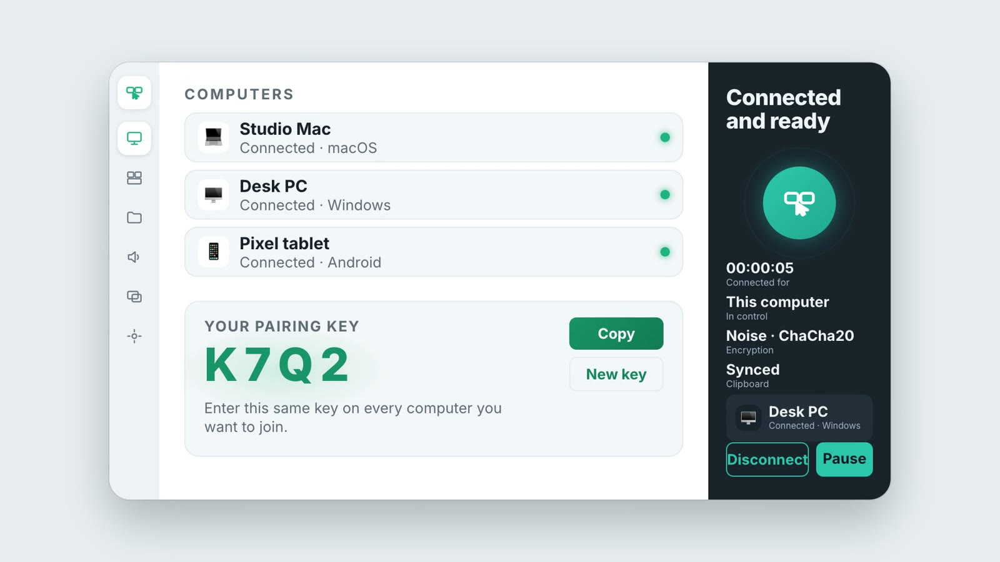

Push your cursor off the edge of a screen and it hops to the next computer. Keyboard, clipboard and files come along.
Twenty-one seconds, with sound.
Not just the mouse.
Drag your screens in Layout to match your desk. Push off any shared edge and it hops, even between two other computers.
Type on whichever computer the cursor is on. Swap Cmd and Ctrl between Mac and Windows so both copy shortcuts work.
Text, rich text and images. Copy on one, paste on another. Copied files travel too.
Drop files or folders onto a computer. Received files land in the folder you choose.
Put Screen Hopper on each computer and open it.
Enter the same pairing key everywhere. Computers on the same network find each other.
Drag the screens in Layout to match your desk.
Push the cursor off an edge. That's it.

Menu-bar app. Full control both ways.
Installer. Full control both ways.
Wayland: GNOME 46+ and KDE Plasma 6.1+.
Your mouse and keyboard hop onto the phone or tablet.
macOS is the most tested. The Windows, Linux and Android builds are newer and have seen less real-world use.
Everything is encrypted end to end and never leaves your local network. No account, no cloud, no server.
Rust, Tauri 2 and a plain HTML interface.
# needs Rust and Node 20+ git clone https://github.com/sxhugo-cell/ScreenHopper.git cd ScreenHopper npm install npx tauri dev # run it npx tauri build # build an installer